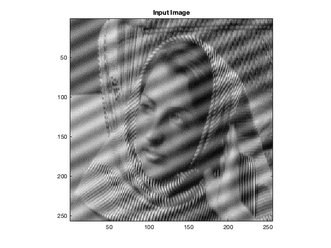
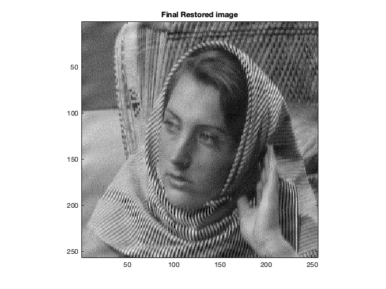

Contents
MyMainScript
tic;
Your code here
load('../data/image_low_frequency_noise.mat');
input_img = Z;
F_input_img = fft2(Z);
F_input_img = fftshift(F_input_img);
u0 = [118; 140];
v0 = [125; 136];
k = 4;
F_restored_img = F_input_img(:,:);
len = size(u0, 1);
for i = 1 : len
x_center = u0(i);
y_center = v0(i);
F_restored_img(x_center - k : x_center + k, y_center - k : y_center + k) = 0;
end
img_restored = ifftshift(F_restored_img);
img_restored = ifft2(img_restored);
imagesc(input_img);
daspect([1 1 1]);
axis tight;
colormap('gray');
title('Input Image');
log_F_input_image = abs(F_input_img);
log_F_input_image = log(log_F_input_image + 1);
figure;
imagesc(log_F_input_image);
daspect([1 1 1]);
axis tight;
colormap('jet');
title('Log magnitude of Fourier transform for Input Image');
log_F_restored_image = abs(F_restored_img);
log_F_restored_image = log(log_F_restored_image + 1);
figure;
imagesc(log_F_restored_image);
daspect([1 1 1]);
axis tight;
colormap('jet');
title('Log magnitude of Fourier transform after applying Notch filter');
figure;
imagesc(abs(img_restored));
daspect([1 1 1]);
axis tight;
colormap('gray');
title('Final Restored image');
toc;
Elapsed time is 0.479379 seconds.
 